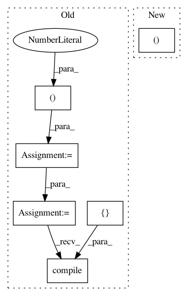

0a80b9769115d291f15c244429793eda4cb8ecad,tests/test_layer_transformer.py,,test_conv_to_wider_layer,#,60
Before Change
def test_conv_to_wider_layer():
a = Conv2D(20, kernel_size=(1, 1),
activation="relu",
input_shape=(28, 28, 1),
padding="same")
b = Conv2D(30, kernel_size=(1, 1),
activation="relu",
padding="same")
model = Sequential([a, b])
model.compile(loss=categorical_crossentropy,
optimizer=Adadelta(),
metrics=["accuracy"])
a2, b2 = conv_to_wider_layer(a, b, 5)
model2 = Sequential([a2, b2])
model2.compile(loss=categorical_crossentropy,
optimizer=Adadelta(),
After Change
conv1 = model.layers[1]
conv2 = model.layers[4]
bn1 = model.layers[2]
new_conv1, [new_conv2], [new_bn1] = conv_to_wider_layer(conv1, [conv2], [bn1], 3)
new_input = Input(shape=get_int_tuple(model.inputs[0].shape[1:]))
temp_tensor = new_conv1(new_input)
In pattern: SUPERPATTERN
Frequency: 3
Non-data size: 6
Instances
Project Name: keras-team/autokeras
Commit Name: 0a80b9769115d291f15c244429793eda4cb8ecad
Time: 2017-12-28
Author: jhfjhfj1@gmail.com
File Name: tests/test_layer_transformer.py
Class Name:
Method Name: test_conv_to_wider_layer
Project Name: keras-team/keras
Commit Name: c3eb62763fcc5029c26b025ba1b60d7788d491a1
Time: 2019-03-30
Author: andhus@kth.se
File Name: tests/test_model_saving.py
Class Name:
Method Name: test_model_saving_to_pre_created_h5py_file
Project Name: keras-team/keras
Commit Name: c3eb62763fcc5029c26b025ba1b60d7788d491a1
Time: 2019-03-30
Author: andhus@kth.se
File Name: tests/test_model_saving.py
Class Name:
Method Name: test_functional_model_saving